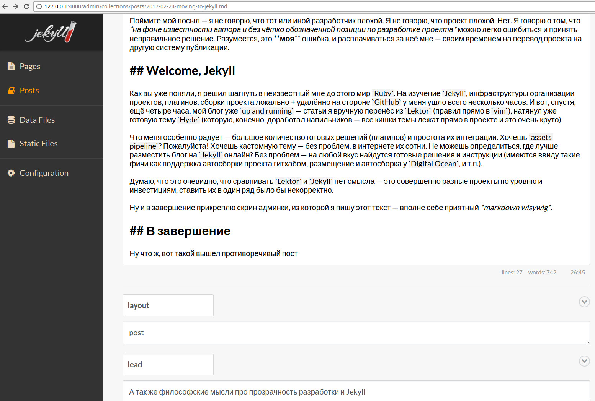

Про Lektor
Так совпало, что, когда я решил вести блог, релизнулся Lektor от Армина. Судя по документации всё выглядело очень вкусно — встроенная админка для редактирования постов, расширяемая модель данных, позволяющая создать ресурс с гибкой структурой, поддержка плагинов и так далее. Да и автор такой именитый — сам Армин Ронахер, автор Flask, и тонны других полезных и действительно качественных инструментов (да, это противоречивое высказывание, но, допустим, что это так).
Что ж, так как я пишу на Python, то грех было не попробовать. В сторону альтернатив я особо не смотрел — конечно, я знал про Pelican, Jekyll и кучу других инструментов, но пробовать каждый из них небыло ни желания, ни времени, ведь передо мной был Lektor. Что я сделал — изучил документацию, прочитал отзывы в сообществе — в целом инструмент для создания статичных сайтов был принят любьми очень позитивно.
Я описал модель данных (посты, категории, и прочее), адаптировал стороннюю тему (изрядно её переработав, благо, лицензия позволяла). Стал вести блог, написал первый пост, за ним второй, третий и так далее.
По мере написания постов, я всё больше и больше сталкивался с различными проблемами и недоработками, начиная от несовершенства админки (чёрт, да это же просто поле для ввода текста без какого−либо WISYWIG — да любой vim справляется лучше) и заканчивая корявой работой сторонних плагинов. Да, по поводу плагинов у меня вопросов нет — проект молодой, плагины сторонние, разумно ожидать от них нестабильной работы и багов. Вот только в сообществе не нашлось людей, желавших заниматься поддержкой этих самых плагинов. Да и сам проект развивался очень медленно, вяло. Казалось, что Армин потерял интерес и забил.
С того момента прошло достаточное количество времени, и я могу сказать, что Lektor не стал лучше. Да, я согласен, что это Open Source, тут никто никому не должен. Хочешь чего−то — форкай, дорабатывай, вливай изменения в проект. Однако, я считаю, что этот случай отдельный. Почему? Да всё просто — Армин Ронахер достаточно известный разработчик, к нему есть доверие сообщества, и вполне ожидаемо было предположить, что Lektor выстрелит, получит поддержку сообщества, будет развиваться. Однако, насколько я вижу — основные запросы сообщества так и не удовлетворены — нет хорошего редактора, реестра плагинов, проблемы с разработкой frontend (sass, webpack, etc), низкая производительность в отдельных ситуациях и так далее. Проблем куча и они не решаются.
Но это же обычная ситуация в мире открытого программного обеспечения! — можете сказать вы. Да, соглашусь. Однако, на мой взгляд, правилом хорошего тона является прозрачность намерений. Любой автор такого большого проекта так или иначе должен пояснить свою позицию, доказать, что его проект это не просто очередной side project just for fun, но целостное начинание, которым можно пользоваться, жить с ним и развиваться вместе. Если у автора нет возможностей для поддержки проекта — все мы люди — то, зачастую можно увидеть надпись developers wanted, и так далее. Прозрачность намерений. Это банально может быть roadmap, либо описание видения проекта, поддержка или использование проекта какой−либо компанией и так далее. Последний коммит армина был 4 августа 2016 года (ветка master) — почти 7 месяцев назад.
Поймите мой посыл — я не говорю, что тот или иной разработчик плохой. Я не говорю, что проект плохой. Нет. Я говорю о том, что на фоне известности автора и без чётко обозначенной позиции по разработке проекта можно легко ошибиться и принять неправильное решение. Разумеется, это моя ошибка, и расплачиваться за неё мне — своим временем на перевод проекта на другую систему публикации.
Welcome, Jekyll
Как вы уже поняли, я решил шагнуть в неизвестный мне до этого мир Ruby. На изучение Jekyll, инфраструктуры организации проектов, плагинов, сборки проекта локально + удалённо на стороне GitHub у меня ушло всего несколько часов. И вот, спустя, ещё четыре часа, мой блог уже up and running — статьи я вручную перенёс из Lektor (правил прямо в vim), натянул уже готовую тему Hyde (которую, конечно, доработал напильником — все «кишки» темы лежат прямо в проекте и это очень круто).
Что меня особенно радует — большое количество готовых решений (плагинов) и простота их интеграции. Хочешь assets pipeline? Пожалуйста! Хочешь кастомную тему — без проблем, в интернете их сотни. Не можешь определиться, где лучше разместить блог на Jekyll онлайн? Без проблем — на любой вкус найдутся готовые решения и инструкции (имеются ввиду такие фичи как поддержка автосборки проекта гитхабом, размещение и автосборка у Digital Ocean, и т.п.).
Думаю, что это очевидно, что сравнивать Lektor и Jekyll нет смысла — это совершенно разные проекты по уровню и инвестициям, ставить их в один ряд было бы некорректно.
Ну и в завершение прикреплю скрин редактора, в котором я пишу этот текст — вполне себе приятный markdown wisywig.

В завершение
Ну что ж, вот такой вышел противоречивый пост. Так или иначе негативный опыт — это тоже опыт, а без него я бы не пользовался сейчас благами Jekyll с его великолепным набором плагинов. Писать посты стало удобнее, думаю, что это добавит мотивации писать ещё.
Комментарии
Comments powered by Disqus